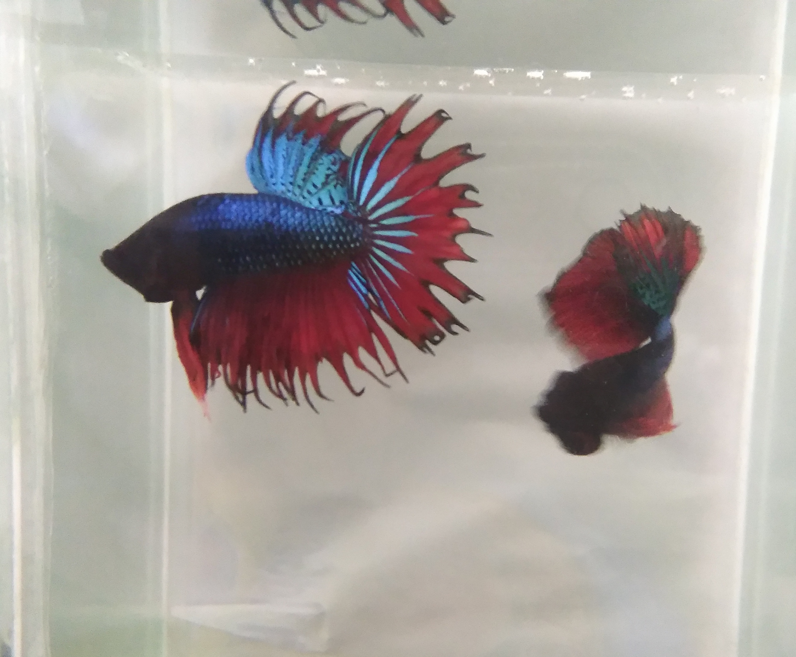
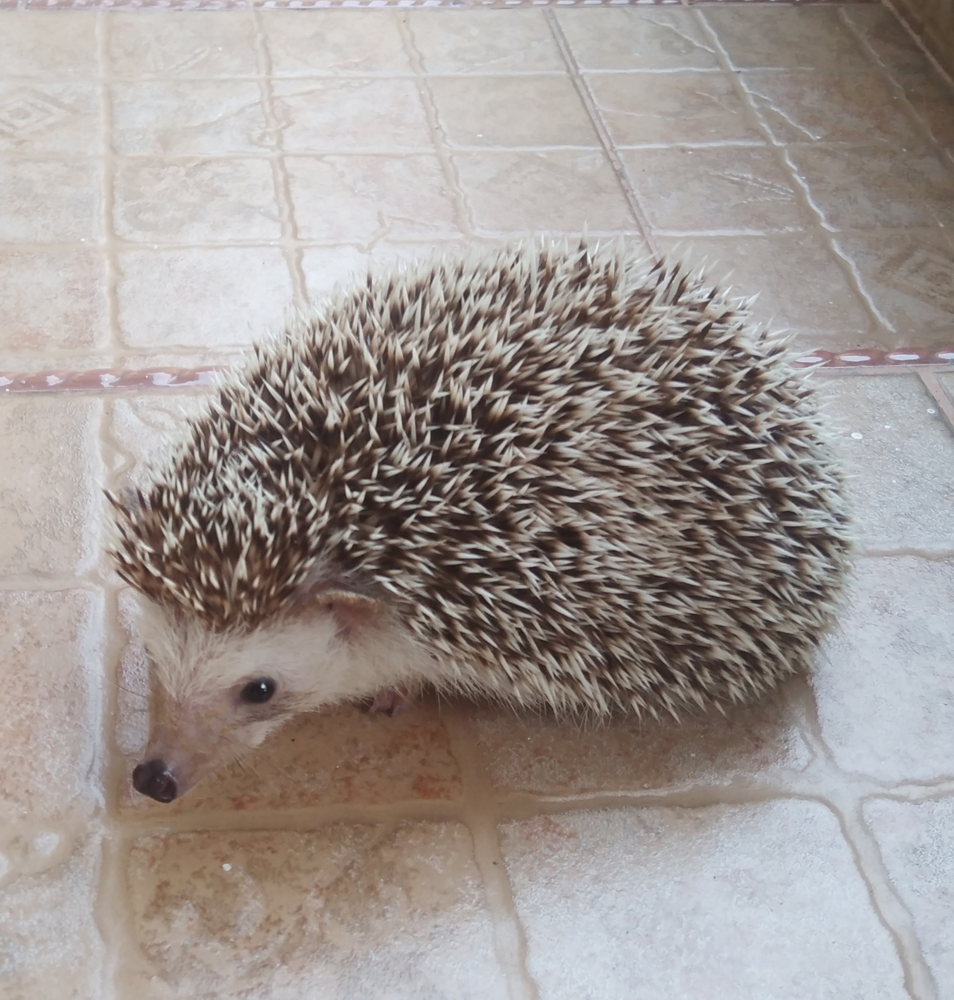
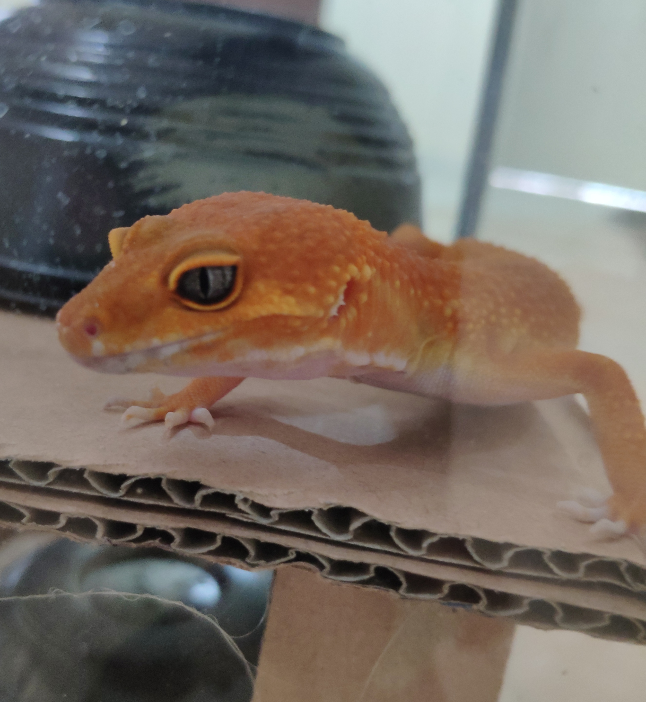
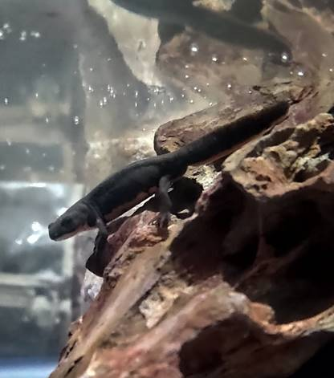

About me
Hi there, my name is Maxwell and I’m from Indonesia, I’m here to share my experience and my knowledge about my pets. Well I have taken care of a lot of pets like fish, dogs, pygmy hedgehog etc. But here, I’ll only share a few tips for pets that maybe can help you understand about them.
Dogs
Let’s start with one of the most favorite pets in the world and I currently have 6 dogs in total. They are very cute and energetic but some of them are very lazy. I have beagle, Golden Retriever, Pomeranian, Maltese, and other types of crossbreed dogs. Just like humans, they also have their own personality. It's quite easy to take a good care of them but it’s also challenging at the same time. So here’s the info that you may need:
Betta Fish
In my opinion, Betta Fish is one of the easiest fish that you can possibly adopt as a pet. Betta fish can be classified as a strong animal type and it’s very easy to take care of . This is a very beautiful fish. They have so many types of colors and they also have their own types, such as: Crown tail, Big ear/Dumbo, half moon, veil tail, etc. You can spot the difference from their tail. But keep it in mind that it’s a very aggressive fish compared to the other type of fish that you probably may know. Here’s more about betta fish:
Pygmy Hedgehog
This little fella is very adorable looking but be careful with the spines. Don't worry the spines aren't easily detached from their body. For me to take care for this animals is quite challenging because there are several things that you must know, like:
Leopard Gecko
I bought my geckos in the animal exhibition, they are all sunglow leopard geckos. There are so many types of gecko that you can choose. Keep this in mind that this type of gecko could grow their tails again but it won't be as good as they once were.
Salamander
I just bought this pet this year in a fish shop near my house. I bought a red belly salamander which is a full aquatic salamander but sometimes it would climb and stay in the rock for several minutes, i.e 1-3 minute. The size of this animal isn't too big, it can grow up to 7-10 centimeter.
*P.s so sorry if there are some mistakes or not accurate information.